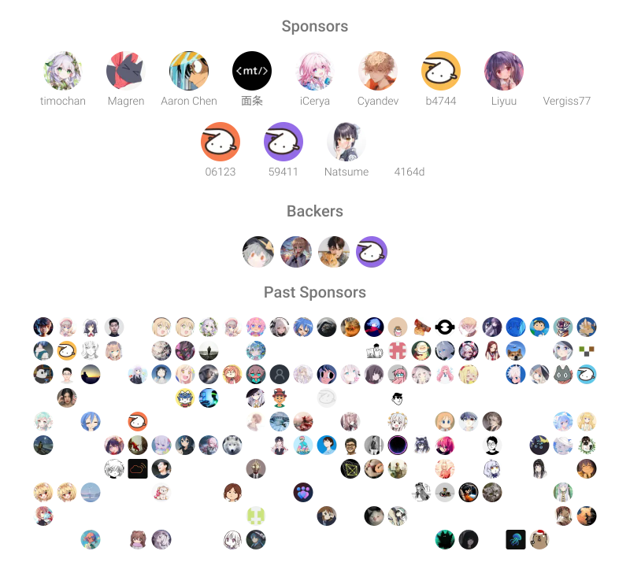

$ whoami
innei — design engineer · digital nomad
building beautiful things with code
$ echo $STACK
TypeScript · React · Next.js · NestJS · Swift
$ rank
██████████ S
「 Ich bin bereit, zu sterben, bereit, wieder geboren zu werden. 」
Featured Work
- Innei/Yohaku — 余白 / Yohaku — A typographic design system for written content. One accent, three neutral tiers, the rest is whitespace. ★194
- Innei/lody-ios — Independent iOS client for Lody — native chat, sessions, and coding-agent collaboration on iPhone ★511
- Afilmory/afilmory — Modern photo gallery for photographers, with S3/GitHub sync, EXIF details, maps, and a WebGL viewer. ★2650
- Torrent-Vibe/Torrent-Vibe — Torrent Vibe, a modern, elegant web interface for qBittorrent that transforms your torrent management experience with enhanced performance, intuitive design, and cross-platform compatibility. ★159
- kansoku-trade/kansoku — AI Stock Partner on Your Mac – Local Market Information, Multi-timeframe K-line, AI Intraday Comments and Follow-up Analysis ★328
- lobehub/lobehub — 🤯 LobeHub is your Chief Agent Operator, organizing your agents into 7×24 operations by hiring, scheduling, and reporting on your entire AI team. ★83112
Recent Writing

GitHub ·
Twitter ·
Blog